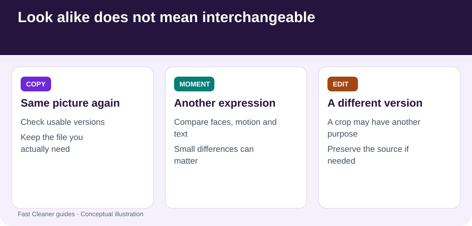

Does Fast Cleaner treat similar photos as files I should delete?
Fast Cleaner groups cleanup candidates for review; a similar-photo group is not a judgment that every image except one is unnecessary. Compare expressions, text, edits and framing before deciding what to remove.
Duplicate photos and similar photos deserve different review. A duplicate may be an extra copy of an image you already have. A similar shot can contain a different expression, a clearer detail, or a version you deliberately edited.
A cleanup suggestion is a useful place to start comparing. It is not a verdict about what matters. The right question is whether removing this version would lose something you want to keep.
- Compare the actual images, not just their thumbnails.
- Edits, crops, and close-together shots may each have value.
- Keep uncertain versions until you can review them properly.
Start with three kinds of repeated-looking pictures
Repeated copies: you saved or imported the same image more than once. Similar shots: you took several frames of the same scene. Versions: you kept an original alongside an edit or crop.
Those are practical review categories rather than a universal definition of how every app detects duplicates. A developer may group items using different rules. Read its labels and examine the files instead of assuming “duplicate” always means identical bytes.
Use a simple comparison checklist
Open each candidate large enough to see the details. Compare faces, motion, focus, text, framing, and the purpose of the picture. For a receipt or document, legibility matters more than which version looks brighter as a thumbnail.
| Group | Look closely at | Reason to keep more than one |
|---|---|---|
| Portraits | Eyes, expressions, and sharpness | Different people look best in different frames |
| Documents | Text, edges, dates, and annotations | One frame includes information the other omits |
| Edited pictures | Crop, retouching, and retained original | You may want to revise the edit later |
| Events | Timing, movement, and background detail | They show different moments |
Three examples where the answer changes
A group photo: two frames look the same at thumbnail size. In one, a friend has closed eyes; in the other, another friend is turning away. Keeping both can be sensible if neither is a complete replacement.
A boarding pass: two screenshots have similar layouts but different journey dates. They are separate records, not spare copies just because a visual tool groups them.
A holiday edit: a cropped image works well for sharing while the original includes a person you may want in a later print. The edited version is not automatically a reason to discard the original.
These are illustrative situations, not measured app-detection results. Their purpose is to make the review decision concrete.
Use built-in detection where it helps
Apple Photos offers duplicate detection. If its collection is missing, Apple explains the indexing and detection requirements. That feature is useful to investigate for repeated copies, while your wider review can include shots you consider similar.
Start with a small group and read the action before confirming. If a tool offers a “keep best” selection, inspect the selected file yourself. Best resolution, best expression, and your favorite memory are not necessarily the same choice.
Make photo review a repeatable habit
Begin with one event or a manageable group. Keep the versions with a clear purpose, remove only those you are confident you do not need, and leave an uncertain set for later. A shorter review that you complete carefully is better than a rushed whole-library decision.
Before bulk deletion, preserve important originals separately and understand your library’s sync behavior. Then check the actual storage change; a larger “duplicates found” count does not by itself measure recovered capacity.
Fast Cleaner helps group duplicate and similar photos for review. Use its organization to make the comparison easier, while retaining the final decision about which moments and versions to keep.
You can also download  Fast Cleaner: AI Photo Clean. Review the features available on your platform and any pricing before choosing an app.
Fast Cleaner: AI Photo Clean. Review the features available on your platform and any pricing before choosing an app.
Your review checklist
Mark each point after you have considered it. This worksheet records your review; it does not inspect your device.
You have reviewed each point. Proceed only with the changes you understand and want to make.
Your selections stay in this page’s memory, are not submitted, and reset when you reload.
Common questions
Should I always keep the highest-resolution photo?
Not always. Resolution matters, but so do focus, expressions, legible information, and whether the image is the version you actually want.
Are edited photos duplicates?
They can be related versions with different purposes. Keep the original if you may need its framing, detail, or future editing flexibility.
Can I safely select every suggested duplicate?
Review the actual groups first. Suggestions are not a guarantee that every extra image is unwanted or replaceable.
Copies, similar moments, and edits
| Case | Why it matters | Review decision |
|---|---|---|
| Repeated copy | You may have saved or imported the same picture again. | Retain the usable version you need. |
| Similar moment | Expressions and small details may differ. | Compare each image before choosing. |
| Edited version | A crop or retouch may serve a different purpose. | Keep the source if future editing matters. |
Apple’s Duplicates feature offers a merge workflow for identified groups. A cleaner’s similar-image suggestions are a separate reason to inspect the content.
Platform source: Apple — Merge duplicate photos and videos, checked November 21, 2026.

Where Fast Cleaner fits
In Fast Cleaner, review the actual suggested images rather than deciding from the group count. For a small set of important photos, manual side-by-side inspection may be enough.
Fast Cleaner’s privacy policy describes on-device media analysis with separate limited analytics. Compare Android and iPhone pricing.
Continue with Should I use Apple Photos or Fast Cleaner for duplicate photos?.
Official platform references are linked beside the relevant claims. Menu labels and available features vary by software version and device. Examples are illustrative; this guide does not claim a measured cleanup result or an endorsement by Apple or Google.